Proposing a speculative enriched learning platform for higher education
As a design student, I’m fortunate to have had an education that values small studio environments. Over the last four years, I’ve gotten to know my peers as a community, and frequently have open class critiques and conversations. However, this experience cannot be taken for granted, as I understand it is a very different learning environment to the lecture-based experience majority of post-secondary education students have.
Sesame began as a project in the fall of 2016. After working on designing personalized education software for K-12 students during the summer, I asked myself why such attention isn’t being directed to higher education, when students have developed more autonomy over their learning. Heading into the fourth year of my undergraduate degree, I was frustrated by the ever-increasing design disparity between the plethora of social and entertainment-oriented digital tools I have at my disposal and the tools I’m asked to use as a student: Textbooks, despite being discouragingly expensive, are often a mandated primary resource across course syllabi (yet are rarely used as such), and e-book alternatives are clunky and dated despite being newer.
Sesame is a free, browser-based open education ecosystem that aims to reconcile students with textbooks and other learning resources while centralizing discussion and feedback between peers and authors. This project is just one entry into a much larger conversation around the academic tools available for students today. Given the highly sophisticated technology we use to power our social lives, why don’t our academic tools deserve the same?
The textbook problem
Sesame began as an investigation into the environmental and economical sustainability of the textbook industry. Textbooks, particularly in higher education, are shifting from a primary learning resource to one that is consumed non-linearly and as a secondary tool.
By nature, textbooks are designed as one-size-fits-all artifacts: “The defining element of textbooks, up to now, has been their commodity status: Being standardized, they’re also impersonal. They’re transient. ... They enforce the notion of the student as a cog and of learning as a machine, and effectively frame education as, first and foremost, an act of consumption rather than exploration.” Despite widespread cognizance that all students learn differently, post-secondary course syllabi often mandate textbooks as primary learning resources; in reality, they are rarely used as such. Particularly in higher education where students have developed a greater sense of learner autonomy, textbooks have instead taken a seat on the back burner of the landscape of alternative resources available.
Today, the knowledge economy forms the backbone of global economic structure. The ubiquitous proliferation of digital technologies across industries has made the storage, access, and circulation of information nearly instantaneous for anyone who is connected to the Internet. While the effects of sophisticated technology impact all industries, ramifications are particularly relevant to education and the textbook market, overturning the direction of traditional knowledge circulation, as well as students’ attitudes toward traditional print medium.
Considering the rapid pace of information dissemination, it is understandable that students today “skim information, rarely reread, and engage in something called ‘power browsing’ rather than actual reading.” The proliferation of rich multimedia such as video, podcasts, and interactive websites also multiply the channels of information delivery.
The economy of learning
The post-secondary textbook industry remains deeply systematized. The North American textbook market is oligopolistic, wherein just a handful of major publishers sit at the top, resulting in both low pressure to innovate, and in the exorbitant textbook prices often cited by students as a primary priority when deciding whether—or how—to obtain textbooks.
Dr. James V. Koch, an economics professor, has done extensive work in the economics of education. He likens the price inelasticity of the textbook market to that of the pharmaceutical market, where “individuals (professors and physicians) who tell consumers what items they should purchase aren’t the people (students and patients) who actually pay for the items.” Because the supply side of the market is highly concentrated, there is little competition and “this behaviour might include high prices, reduced output and diminished innovation.”
Although publishers are developing digital alternatives for textbooks, they are neither enticing for students nor fiscally optimal. In reality, while “e-books represent a promising new textbook mode, … digital rights-management techniques enable publishers to turn off digital access at the end of an academic term. This is a stronger and more immediate form of artificial obsolescence than publishers have enjoyed with print textbooks.”
There are numerous effects to which the ubiquity of technology spotlights the growing incongruence between the way the textbook industry operates, and the every day habits of students and teachers. Despite the prevalence of sophisticated technology in our every day lives, the uptake has been slow in higher education systems. If technology encourages the innovation and change in products that we are rewarded with in our everyday lives, why is this not the case for academia, which is indisputably nontrivial to our current and future students?
Technology in the classroom
While the rate of students entering higher education is steadily on the rise, the natural consequence is that the class sizes are also increasing. It is not uncommon for students to be in lecture halls among hundreds of others; and, in such environments, it is difficult to engage with peers, let alone the professor, in any meaningful way.
Some courses have adopted a ‘blended learning’ approach where students attend lectures in-person, and then participate in discussion online through a learning management system (LMS). LMS software is implemented across universities and colleges as an administrative and social tool for students and professors; for example, allowing for teachers to deliver electronic resources, peer discussion boards, and electronic grading. However, these systems exist disparately—a 2012 report observes no less than 9 distinct systems implemented across Canada—and “only one in four students think that these LMS systems are being used effectively within their institutions, and only one in five think that the LMS systems are well integrated in classroom activities for blended learning.”
In summary, the industry in its current state is coloured by a lack of trust between key stakeholders of an institutional product: the students, the professors, and the system. There is a disconnect between the students—the users of the system—and the publishers—those who design the system. Current textbook design practices do not appear to leave room for student input. A core tenet of product design today, as a discipline, is valuing user feedback highly, prioritizing the needs of the end user—the student—in a process of iteration and cyclical development. Sesame as a study is interested in how applying a user-centred (student-centred) design process can shift the status quo of educational tools Figure 1:
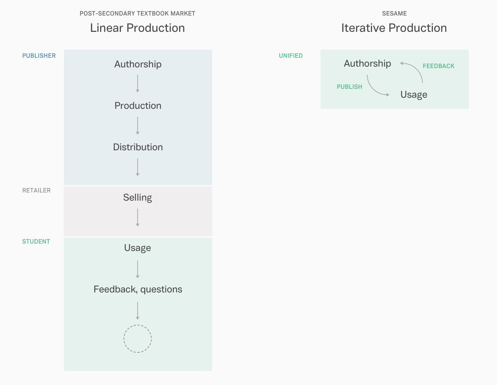Figure 1. Schematic of textbook production. In the traditional textbook market, the production chain ends when the student, the end-user, receives and uses the artifact. Yet, any feedback never makes it back up the chain. How can iterative production shorten, simplify, and improve the chain?
Opening education
While progress is slow, there have indeed been numerous revolutionary and successful products in open education. Wikipedia is an archetypal example of the power that the “commons” has on impacting knowledge circulation. In recent years, browser-based software, both non-profit and for-profit, like Khan Academy and Coursera are referred to as massive open online courseware (MOOCs). MOOCs make it easy for anyone with Internet access to learn at their own pace.
Each of these innovations occupy an independent space to the software used widely across institutions such as learning management systems. Consistent and timely innovation in this space highlights the irony in the increasing sophistication gap between free education software, and software implemented in higher education where students pay thousands in annual tuition.
Yochai Benkler, Berkman Professor of Entrepreneurial Legal Studies at Harvard Law School, has dedicated years of his career to studying cyberspace and commons-based information and resource management. His work examines how the revolution in technology allows collaboration that carries transformative consequences for global economy and industry. Benkler refers to peer production as an “Internet-mediated social practice” that “plays a more significant role in the information production environment that was theoretically admissible by any economic model of motivation and organization that prevailed at the turn of the millennium.” The Internet affords access to a range of resources, including formal and informal educational materials, “fostering a new culture of sharing.” In light of this, some core assumptions of our economic models are thrust under the microscope: Are the incentives at the core of innovation social, rather than material? What does ownership mean in a new era of sharing?
Benkler’s work is fundamental to understanding how a number of core principles of peer production can be conducive toward designing an information system in higher education. In his publication Common Wisdom, Benkler applies his research specifically to textbooks and educational resources:
“The fact that this vast pool of human talent, interest, knowledge, and experience now has, as it never had before, access to the basic necessary physical capital necessary to make and communicate cultural materials of all sorts has created a deep transformation in the digitally networked environment, and in the information economy and society. The critical change is that social production based on commons, rather than property, has become a significant force in the economy.”
Open learning as a philosophy embraces “pedagogical efficiency.” Open Education Resources (OER) are defined as “digitized materials offered freely and openly for educators, students and self-learners to use and reuse for teaching, learning and research” offering “opportunities for systemic change in teaching and learning content through engaging educators in new participatory processes and effective technologies for engaging with learning.”
Modularity
One of the core principles of OER is modularity, a primary theme in literature surveyed throughout this study. Benkler introduces the concept of modularity in his definition of the basic unit of an educational resource as a discrete learning object providing a single learning experience for a student: “The discreteness of learning objects of this sort, as compared to a more sophisticated, integrated set of materials like a textbook, is that they can be created whole in small and discrete chunks, that need no conceptual coherence with other similar objects until the moment at which they are collated into a learning experience—if that.”
Modularity, as a principle of participatory design, allows for “the use of standardized units or sections for easy construction and flexible arrangement.” Because segmentation means that individual pieces of content “can be altered or replaced without affecting the remainder of the system,” modularity aptly allows materials to remain fluid and dynamic, according to Gary W. Matkin, Dean of Continuing Education at UC Irvine:
“Given the right infrastructure, digitized assets can easily be altered. The alteration of a static textbook, then, could be prompted by a number of purposes. The material could be updated, say, to incorporate new knowledge. It could be improved as students and teachers develop better ways of expressing concepts or ordering learning objects. It could be localized or customized for a variety of learners, whether in different cultures or at different levels of education.”
The primary power of modularization and segmentation is realized from a production perspective as well as a consumption perspective. Of the former, modularizing content production leverages a large, diverse network of knowledgeable individuals, potentially distributing the work of authorship, previously accomplished by a single entity in the traditional publishing sense, into the hands of “a billion people in advanced economies [who] have between two and six billion spare hours among them, every day.” Matkin argues that “this montage model, where more extensive learning pathways or courses are made more modular or unbundled, is supplanting the linear model, where one concept builds upon another. In this model, material is organized in such a way that new and different contexts can be built from individual learning objects.” Therefore, stakeholders can benefit from the butterfly effect when modularity and open learning are combined.
For consumption, modularization means that students are free to interact with materials as they need them. Not only have students reported (during primary rseearch) using traditional textbooks nonlinearly, but being prescribed only fractions of an entire volume. Modularization means that professors can prescribe only relevant pieces of knowledge to their students, embracing the aforementioned notion of pedagogical efficiency. Matkin similarly supports that “educational materials that are modular in organization will find the most users and re-users.” Modularization also allows for niche fields of knowledge to emerge, allowing students to engage with a long tail of subjects that might fascinate them: “For any topic that a student is passionate about, there is likely to be an online niche community of practice of others who share that passion.”
In a networked space where a large collective has put forth effort to produce and curate resources, modularity also implies the potential to create packets of learning suitable not only for diverse content, but for diverse styles of learning: “The customizable nature of dynamic material can allow the same material to be presented in multiple ways so that learners can look at it through different lenses.” This might include different media such as audio/video resources or interactive activities. Because open contribution leverages the resources at the hands of every other engaged participant in a given community, modularization also reduces cost for instructors in an economic sense.
Benkler suggests that “for many digital learning objects, a well-searchable space in which individuals simply make objects and make them available freely is enough to generate a wealth of components that teachers can then mix and match to create their own collection.” Instead of individually sourcing different discrete learning objects together, the cost to customize content toward personalized instruction becomes a trivial amount of time when the commons have collectively generated a bank of sorts. Especially in higher education, where professors ideally enjoy a larger degree of freedom in structuring their syllabus and classroom experience, “each teacher would create his or her own curriculum, syllabus, and classroom framework; and students in student-centred learning environments could do the same” ultimately creating a more personalized and enriching learning experience.
Social Learning
Informally, students today already use various social media to collaborate with peers and friends. Students report using Facebook Groups, for example, for conversing with peers and organizing student study groups. The diverse suite of tools available for use in an educational context demonstrate that ‘social learning’ is another core pillar of a networked learning experience. Brown and Adler suggest:
“The most profound impact of the Internet, an impact that has yet to be fully realized, is its ability to support and expand the various aspects of social learning. ... Social learning is based on the premise that our understanding of content is socially constructed through conversations about that content and through grounded interactions, especially with others.”
Socially-minded tools like blogs and social networks make up a “new user-centric information infrastructure that emphasizes participation over presentation, that encourages focused conversation and [vernacular] briefs rather than traditional publication, form[ing] the basis of a situated understanding emerging from action, not passivity.” Brown and Adler postulate a shift from the Cartesian view of learning to a social view—that “mastering a field of knowledge involves not only ‘learning about’ the subject matter but also ‘learning to be’ a full participant in the field.” Brown and Adler cite open-source software as a primary success case in social learning, as is the studio-based academic system in architecture and design education; however, the proliferation of forum-style, threaded conversations across the Internet confirms that engaging conversations can certainly be virtually facilitated.
Brown and Adler’s paper also suggests that having students share coursework publicly on the web can encourage students to become active participants in their education. When David Wiley asked his students to post course discussion to public blogs and “outside comments showed up, indicating that the students really were plugging into the international community’s discourse, the quality of the writing improved again. The power of peer review had been brought to bear on the assignments.” Brown and Adler refer to this pedagogical mode as a demand-pull approach that provides “students with access to rich learning communities built around a practice. It is passion-based learning, motivated by the student either wanting to become a member of a particular community of practice or just wanting to learn about, make, or perform something.” While the demand-pull approach is resource-intensive, that is exactly what the Internet is equipped to handle. Figure 2 demonstrates how Sesame might open new channels of communication.
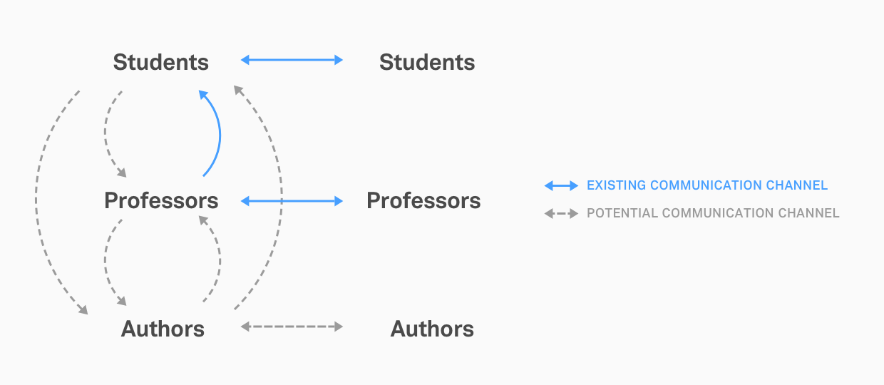Figure 2. Given the current classroom structure, there are multiple untapped communication channels between parties that are easily remedied by the powers of the Internet today. Can exploring more of these channels encourage “passion-based” learning?
Designing Sesame
This study began as an inquiry of the economic and environmental sustainability of traditional textbook publishing. From the literature it is evident the problem space runs deep, and out of synthesis has emerged a fundamental pedagogical question: Can students in higher education benefit from an integrated virtual space in which they can access, consume, and engage with their peers as well as professors, authors, and the greater public sphere?
As a speculative proposal for the future of digital academic systems, Sesame addresses a few key design areas.
Flattening the classroom
Sesame is structured in two areas: the Commons and Classrooms. The Commons are open, public spaces that allow anyone in the public domain to view and add content, much like Wikipedia, with policies in place for attribution, version control, and peer review.
Sesame Classrooms are powered by the Commons. Administrators of classrooms can fork content from related Commons modules, as well as independently add additional or supplemental material relevant to that classroom Figure 3. A student enrolled at an institution then enrolls in a Classroom through a unique join code, not unlike many LMS systems today.
The scope of the current prototype, as well as designs featured in this case study, focuses on Sesame Classrooms. Further elaboration on the design and integration of the Commons can be found in Section 5.
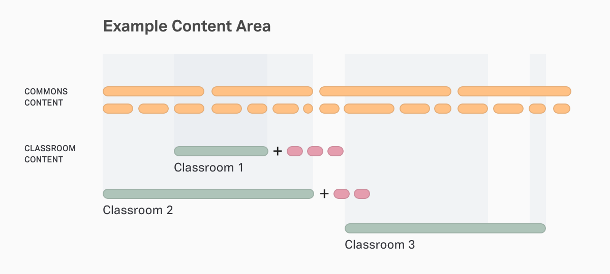Figure 3. This diagram demonstrates modularization of content.
The distinction between open and closed (Classroom and Commons) comes from multiple sources. One core tenet of Sesame is the flattening of the classroom environment, such that traditional hierarchical roles of the classroom do not dictate a linear flow of information. By allowing the Commons to be public realm, anyone can be a “student” and continue learning through Commons content.
Secondly, primary research demonstrated that students value privacy and trust in an academic environment. Students I spoke to mentioned that they felt safer sharing resources with familiar friends and peers, whether for the reason of fearing repercussions for distributing potentially-copyrighted content or simply being judged by the public. Having a closed “space” in which only the immediate peers of a student can view shared content fosters open and relevant conversation.
The public arena of the Commons also functions as a repository for information or further discussion with the public at large. Flattening the classroom structure empowers students to take on mentorship and leadership roles in the Sesame community in subjects they have expertise in, as per Benkler, Brown and Adler’s ideas about OER. Integrating Commons also has the benefit of enriching a student‘s education with interdisciplinary content.
Accustomed to lecture-hall education, students expect to sit passively and absorb information; yet, time and again we hear that engaged learning is the most effective mode of active learning. By introducing Commons and mentorship roles, Sesame aims to engender a different set of values in contemporary education.
Covering the basics: The ergonomics of screen reading
Sesame hypothesizes that a natively designed digital reading experience can unlock potential interaction between student and material that enriches and facilitates learning.
Out of convenience, students today use e-books, which are most often a PDF version of a textbook designed for print. This poses a problem with respect to the reading experience, as the typesetting and navigation of screen reading is very different from a physical book. Instead of trying to duplicate print, designing for screen reading should attempt to transpose the advantageous characteristics of reading from print, to an equivalent or superior experience on screen. As previously outlined, competition has optimized products in the commercial space for comfortable consumption—digital products like commercial media, online news, are well-designed for reading comfort while academia suffers.
Researchers agree that a substantial factor in determining reader success with screen reading is psychological. A German study theorizes “haptic dissonance” as an antecedent of e-book adoption and acceptance. Authors Gerlach and Buxmann also criticize existing literature in the field to lack scholarly-based insights, as quantitative studies often fail to control reading conditions, environments, and readers themselves. In their study, they hypothesize that “haptics (i.e., the tactile feel of reading a printed book) play an important role in attitudes towards books, thus, affecting the acceptance of e-books where those haptic attributes are missing.”
Therefore, attempts to model digital reading experiences entirely after print are missing the mark, so to speak. The current, and future generations of students grew up with screens and therefore have developed their own associations with native reading experiences that Sesame can leverage.
The act of flipping pages, for example, is an archaic experience for people who are more used to infinite scrolling. Sesame breaks down content into digestible lengths (modules). Rather than infinite scrolling which can also disorient readers, Sesame encourages chunking of content into modules.
Sesame uses optimal reading width and a generous font size to encourage comfortable reading. The background colour provides softer contrast for long-form reading while remaining high contrast enough to read from a distance Figure 4. We might also imagine a suite of customizable options for the reading experience, including scale and contrast, as well as aids for the visually-impaired.
Figure 4. A 600px container for the body text keeps a comfortable line length. Sesame’s navigation bar is removed in the reading environment, and extra metadata such as the required reading tag fades on scroll to keep reading a distraction-free experience.
During testing for the initial prototyping phase, participants described the reading environment as comfortable, pointing out specific visual design aspects like column width, font size, and type treatment. Participants were particularly enthusiastic about this core feature of Sesame, and appreciated the exclusion of “flipping” pages that digital translations of textbooks often employ.
Summary of design considerations
Reading with Sesame
- LaTeX integration standardizes mathematical notation across subjects on Sesame and the Internet in general as a best practice.
- Image carousels and asides for visual-heavy content ranging from scientific diagrams to art history and design.
- Sesame, being browser-based, allows for full copy and paste functionality of text and other content, as opposed to scanned images or PDFs which can cause formatting complications.
- Embedding media, such as videos, inline allows students to view material without leaving the page, decreasing the opportunity to be distracted.
Feedback from students also led to the adjustment of page layout such that the browser could be comfortably viewed at half-width Figure 5. These proportions are also appropriate for tablet browsing. Students explained that they may prefer to multi-task on desktop, or take notes simultaneously in the text editor of their choice.
Figure 5. Sesame is designed to be fully functional at half a typical browser width. The discussion panel comes up from the bottom of the screen instead of the left.
Sesame, in its current design, makes an effort to differentiate, not emulate, screen reading from the traditional experience of reading a printed book by embracing the way students have come to navigate browser-based content.
Beyond covering the basics of a comfortable reading experience, an innovative reading platform should consider new ways of reading on screen; for example, one might imagine a speed reading interface, a collaboration mode that may be enabled for certain types of text, or the implementation of a break timer to reduce eye strain Figure 6.
Above all, Sesame is above all a framework that values iteration, and a core tenet of the platform is to value iteration. Sesame can potentially open-source the development of the authorship platform such that a wide variety of content can be imported into different formats to accommodate discipline-specific layouts.
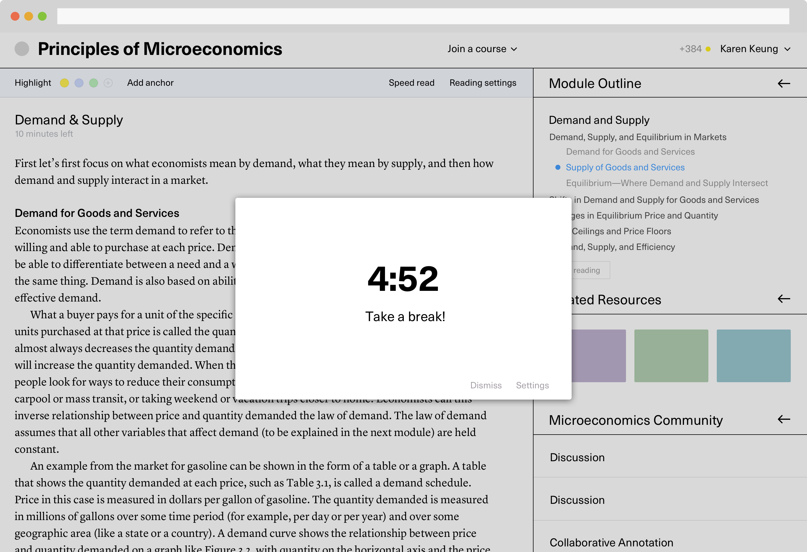Figure 6. An early sketch of an automated break timer that encourages the student to take frequent breaks from reading; for example, should the student have remained on the page for x consecutive minutes.
Contextual engagement
Another priority for students is convenience. Learnings from early primary research affirmed that students are busy, and convenience is king—and not merely in terms of access to textbooks. Timeliness can invisibly impact the way students interact with learning material. For example, peer-to-peer engagement today in any given LMS is usually in the form of a forum or discussion arena—a rather archaic form of dialogue in terms of Internet technology today. Given the nature of online discourse today, students are more accustomed to short comments rather than mandatory three-hundred word responses.
Contextual engagement recognizes that students feel inclined to participate only when it is convenient to do so. Sesame builds in-line engagement through an annotation system Figure 7 & 8. Parallel to the text is the ability to highlight any part, leave a note—either public or privately, the latter of which is distinguished by a different colour and becomes part of a private collection of notes—and leaves the conversation open to peers.
Figure 7. In-line discussion.
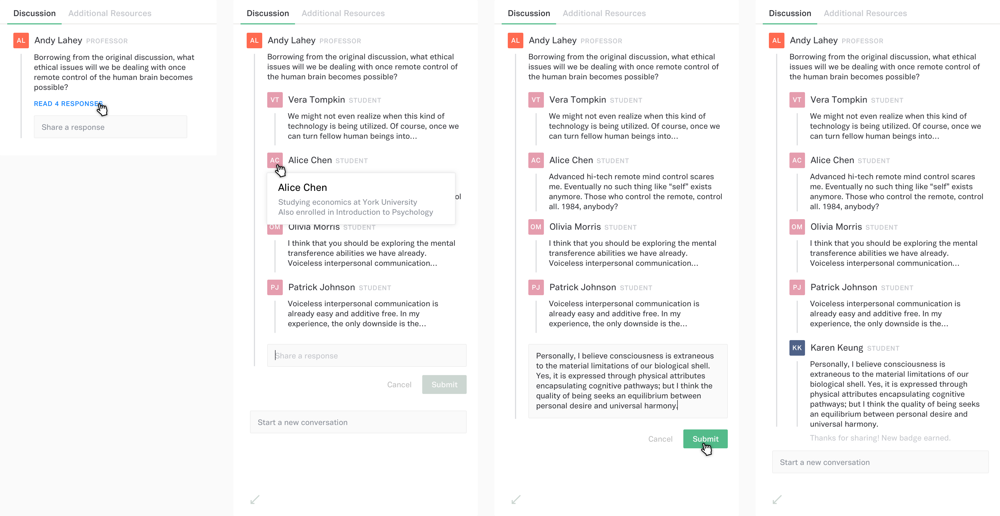Figure 8. Flow of the discussion experience.
While designing the discussion feature, motivation and incentivization were questions that came up. I explored options of a points system as well as achievements. Testing this feature with students revealed a multitude of different reactions, and the feedback was rich enough that I felt incentivization became a question of its own.
Designing Sesame, I thought about how the basic idea of annotation could be re-evaluated. Collaborative annotation was a concept explored very early on Figure 9, and is what evolved into the public versus private annotation modes in the proposal today.
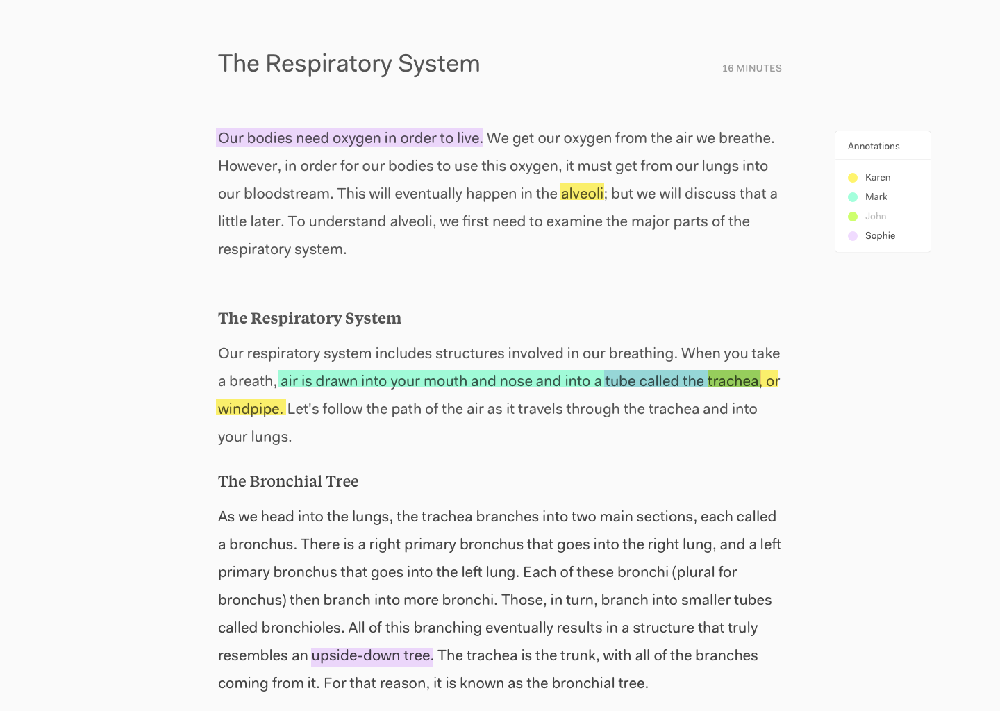Figure 9. A very, very early sketch imagining what real-time collaborative annotation might feel like.
One of the things I learned in my design education is that reaction is key to reading comprehension. A professor taught me to always pencil in notes right next to the text we were reading, as those initial thoughts are often the seeds of much more. Sesame builds upon this principle in hopes that in-line engagement, both with self and others, leads to higher engagement with learning material.
Given the contemporary student’s aptitude for navigating the digital resources of the web, students are often naturally supplementing their own education. In primary research, students I spoke with cited Google searches as their first resource when seeking clarification on a topic presented in a lecture or reading. The capability to find and share those resources with a Classroom’s participants—in-context—will hopefully increase their utility Figure 10.
Students also use social networks or utility tools such as Facebook and Dropbox to share files and resources amongst friends. While easily integrated with existing social behaviour, this closes circulation to those socially engaged with one another. On a logistical level, this behaviour or flow, is potentially distracting as the student must disengage from their academic tasks to engage in a social tool, and more often that not those social tools hold the potential of distraction.
Summary of LHP components
In-line engagement opportunities on Sesame
- Private annotation allows students to jot down private notes that can be reviewed, exported, or viewed alongside with public annotations
- Public comments and questions lower the barrier to engagement, and encourage lively conversation as opposed to formalized discussion via a forum structure.
- Additional or related resources supplied by professor and peers form the basis of an organic learning repository.
Figure 10. Various potential forms of the left hand panel (LHP), dynamic to which of the three forms of engagement are applicable.
By centralizing resources and discussion to Sesame through LHP components, students are able to read and find associated material in the one place. This mechanism is convenient, timely, and builds community. While primary research showed that a sense of comraderie varied from student to student, some felt strongly about teamwork and the value of sharing.
Networked Search
Resource sharing also resurfaces Benkler’s idea of a “well-searchable space [that] generates a wealth of components.” Through the suggested resources posted to Sesame over time, an organic, modular repository builds up through the efforts of authors as well as students. These suggested resources effectively formed as individual packets of learning objects.
What this means is a shift in the flow of information in a classroom—not only is the professor administering the organization of material, but learning objects that students are already using today become more widely circulated and via Sesame, become used in organic ways. As mentioned in Section 3, this style of circulation can help diverse styles of learning. Those who find videos helpful can easily access that right next to the content, instead of looking it up themselves. This in turn fosters a sense of community. As mentioned, modularity “allows for flexible arrangement and adaptive materials,” fitting to the way students use Internet resources anyway. Using a mechanism by which students can rate items with “Helpful,” items become self-circulating Figure 11. Lower quality, inaccurate, or outdated resources will naturally be replaced by better resources. Classroom adminstrators may also reserve the right to curate resources.
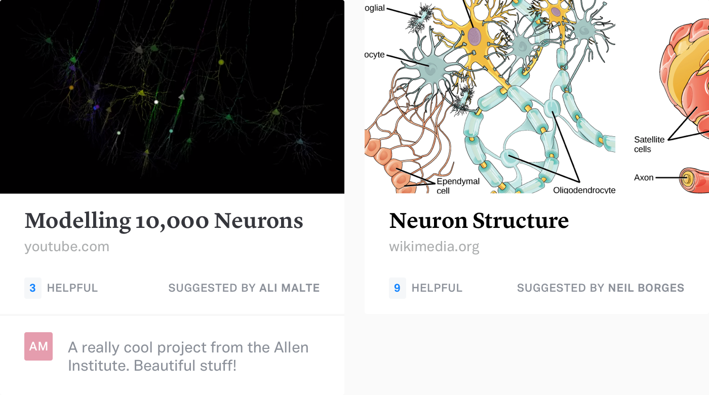Figure 11. Sesame scrapes an image, title, and root domain from each link shared. Students can rate items as “helpful” to show appreciation as well as regulate quality.
To organize and surface all this resource bank, Sesame’s dynamic search feature leverages students’ browsing and search behaviour. Powered by machine learning, this speculative feature aggregates all students' behaviour in a given classroom or module to provide an enriched search experience.
Primary research—and first-hand experience—showed that students use CMD + F liberally, whether finding a term in a PDF textbook or on a website. By connecting the keyboard shortcut to an enriched search in the browser Figure 12A-C, we might imagine a host of dynamic results. On a basic level, search can easily identify how many times a query is on the current page, or perhaps whether a query has a matching definition or entity; beyond that, searching Sesame yields results tailored to your immediate search history, or perhaps timely context such as active discussions (discussions taking place before an upcoming evaluation), and of course, surfacing related modules and suggested resources Figure 13.
The development of search went through a few visual iterations:
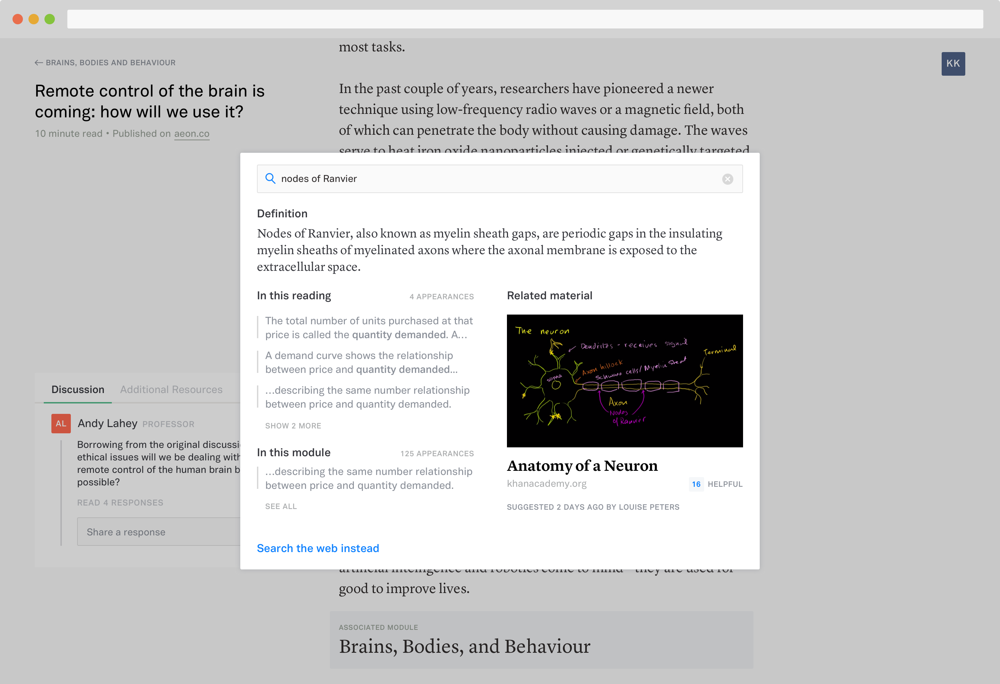Figure 12A. Modal search box felt out of place across Sesame and obstructs a lot of the original context on screen.
Figure 12B. Bottom bar allows for continuous horizontal scrolling for more content, but awkward use of space.
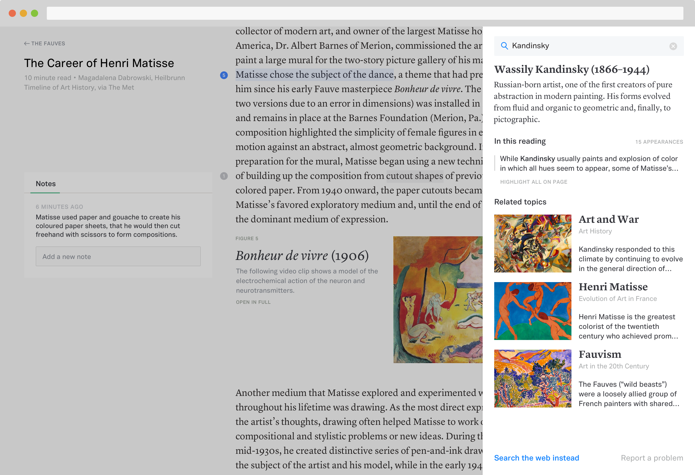Figure 12C. Final iteration places search as a right-hand panel. This counters LHP nicely, and allows content to peek through behind to demonstrate changes on screen.
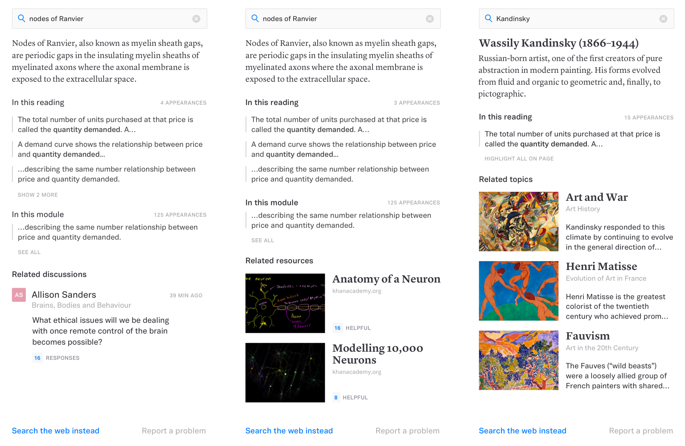Figure 13. Depending on: the query, the searcher's unique search history and behaviour, and overall trends in the classroom, search results will vary. A comprehensive array of possible modules can be found on Sesame’s product website.
Next steps
Given the scope of this current iteration of Sesame as a project, the initial prototype I developed over the last four months only scratches the surface of the problem space. A number of ideas were shelved over the design process:
Incentivization and Gamification
Over the course of those months, I also investigated how incentivization and motivation would play into engagement on Sesame. In the prototypes I developed during user testing Figure 14–15, I tested the idea of “contribution points” and badges as a method of motivation. For the most part, students assumed that a points system on Sesame would correlate to a participation grade in class. While possible, this was not the intended behaviour behind the design decision. Points were originally intended to be a running score across the Commons and Classrooms, and serve as a way to evaluate credibility; however, some students provided feedback that this type of motivation might encourage lower-quality posts.
On the other side of the coin, one student shared that a professor used online forum participation toward a bonus grade in class, and resulted in a large volume of quality, engaged contributions. Additionally, some students extended the discussion into the possibility of gamification including public leaderboards, with a mix of positive and negative responses.
Given the mixed reactions and implications of designing a haphazard system, I decided to exclude an explicit incentivization system in the current proposal, as I identified more pertinent challenges for a “v.0” proposal.
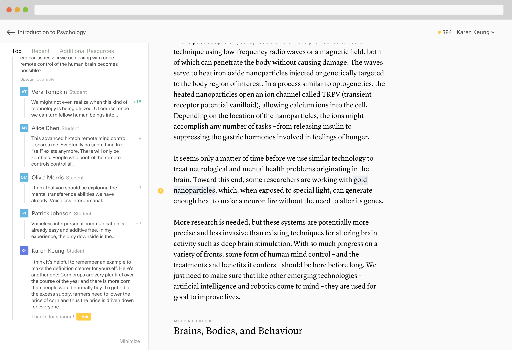Figure 14. Prototype testing students' reactions to gaining points after contributing to a conversation.
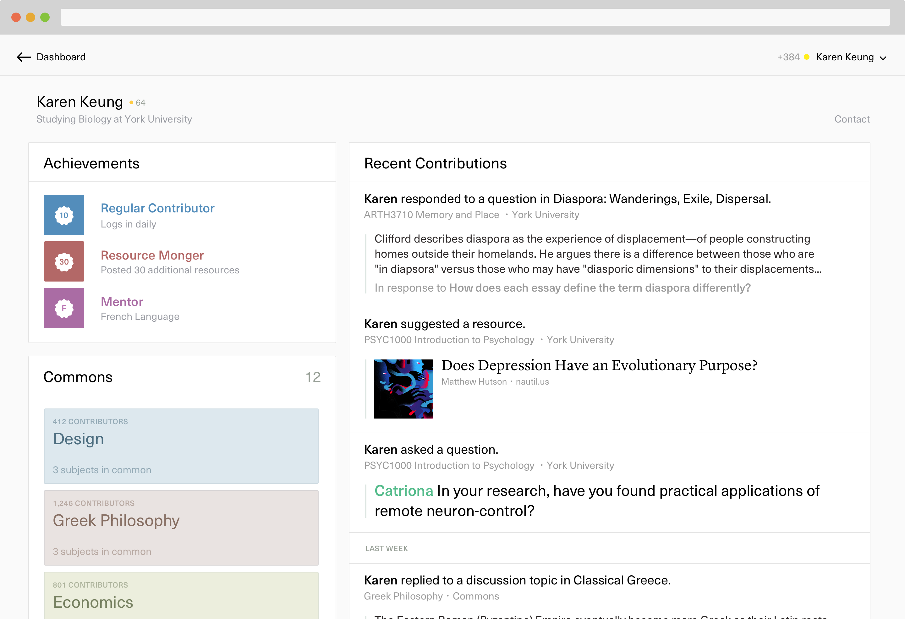Figure 15. Prototype testing students' reactions to a record of public achievements or badges to encourage consistent participation.
Learning styles
In developing personas and user flows for Sesame, I conducted brief research into learning styles, namely, the Felder-Silverman learning style model which describes four dimensions of learning styles, wherein each dimension is a linear continuum with a preference for a certain learning style: Active–Reflective, Sensing–Intuitive, Visual–Verbal, and Sequential–Global. While I could not afford the time and resources to include this as an explicit lineage of research into Sesame, learning styles are indeed an additional perspective to consider when designing an open-access learning platform.
Classroom/Commons relationship
Given more time, I would have loved to explore more of the mechanics behind the authorship platform powering the Commons, and the dynamic between Classroom and Commons content. It was definitely a decision made out of convenience, as a student myself, to explore the student-side of the interface in more depth than the author-side; yet, both are equally important in the development of an institutionalized product. A conversation with Michael Evans, Associate Dean of Digital Learning and Innovation at Sheridan, confirmed that faculty and administrative adoption of technology is an enormous hurdle in inciting change at institutions.
The long tail
Questions guiding next steps
- Could the trend of ephemeral communication in social media take root in more serious applications? For example, could joinable converastions be a useful utility for study groups to form outside of social friend groups?
- How does gamification shift the tone of an education platform?
- What would AI-generated content summaries look like?
- What would a self-quizzing platform look like? Could questions be generated based on the student’s past evaluation data?
Reflection
On process
In addition to extensive literature review summarized in Sections 2 and 3, I conducted primary research in three phases. In the fall, I conducted a quantitative survey via SurveyMonkey, which was followed by individual conversations with a handful of undergraduate students studying in Ontario. Insights from these conversations guided the design exploration process that followed.
After developing an initial prototype, I conducted user testing sessions with students, some being repeated participants from the fall term research. I crafted a mix of prototypes using HTML/CSS and Principle in attempt to test specific features of Sesame.
Given more time and resources, I would have pursued larger studies to gather less biased and more objective data. Nonetheless, each phase of research was arguably the most valuable aspect of the entire design process. Working on Sesame solidified, again, the value of speaking directly with the users one designs for.
A significant takeaway from the user testing sessions was the way participants described and reacted to features in Sesame. Students consistently likened features and experiences in Sesame to existing social media platforms. This signals an important shift in the way the contemporary student perceives digital tools. The modes of consumption as defined by the platforms they use most often become the paradigms for interaction on the web and form the basis for expectations and preferences.
As a design student, this was a fascinating discovery: I anticipated the way I view and evaluate software might be different from a non-design college or university student, so to hear how my peers from a multitude of backgrounds evaluated their tools was eye-opening.
Testing Sesame with students demonstrated that there a gap still exists between what is and what could be in higher education. It will take time and active effort for all parties—students, educators, and authors—to recognize and react to these changes. It is therefore especially important to start these conversations through the development of speculative tools like Sesame.
On design
Sesame has been an undertaking not just of my technical skills as a designer, but my research and synthesis skills. Upon reflection, I realize that many of the ideas explored here are not only out of pure secondary research but the impetus has been my actual undergraduate experience. I’ve had the privilege of receiving an objectively progressive, open, and socrative education and found a disparity amongst my own courses outside my department, and among my peers who study in different disicplines. Sesame has as much been about pushing the boundaries of technology/design as it is about a desire to disseminate a better experience for students as a whole.
In the Figure 16, the x-axis refers to the degree of privacy for each type of tool. MOOCs like Coursera for example, and even tools like Wikipedia, are free and open-source, but do not tie directly to a classroom experience and everything is available to the public domain. LMSs, on the other side of the spectrum, are licensed by institution; however, suffer from lack of student autonomy and engagement.
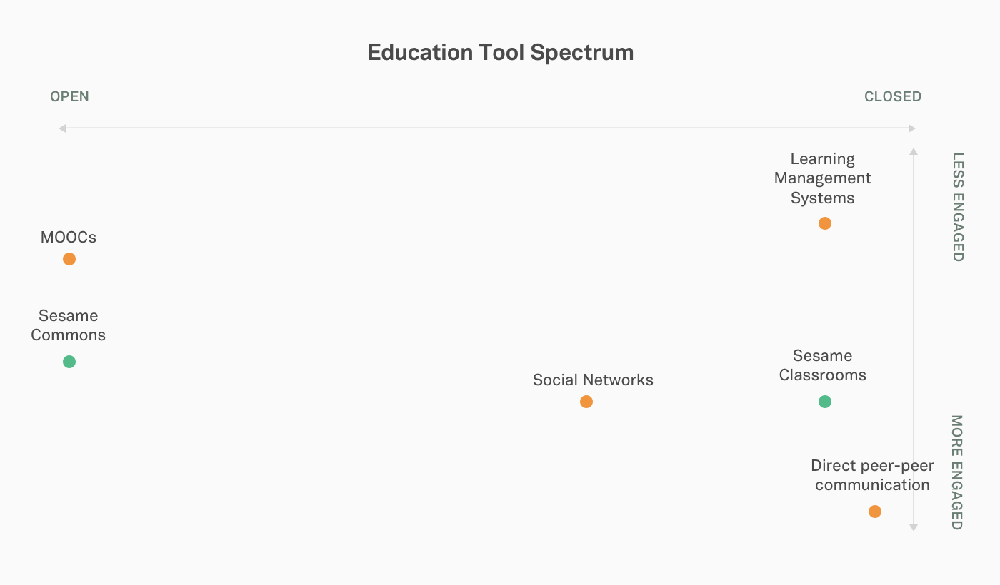Figure 16. Schematic identifying the relative positions of different types of education tools across accessibility (open/closed) and user engagement.
Sesame’s hybrid ecosystem with both open and closed arenas targets the happy medium on this spectrum, by providing a centralized tool that encourage and facilitate engagement with content and peers.
In closing
Upon reflection, I was perhaps overambitious from the outset of the project, not realizing the extent to which the topics I have explored are very much just the tip of the iceberg. Sesame has come to be what I hope is a probe into an enormous area of work in the future.
Given the deeply systematized nature of post-secondary institutional change, Sesame as a proposal is speculative, and ultimately advocates for the liberation of academic content—to put education back into the hands of students. Throughout our conversations, students often referred to assigned tasks “as a means to an end”; that is, readings or assignments were often completed with the sole objective of passing the class or achieving their degree. As a student myself, this was disillusioning to feel in my own education. Learning, for the sake of learning, has been lost somewhere along the way—or perhaps, has been long missing.
When the audience is a demographic that’s so familiar with contemporary interaction paradigms, academic tools easily feel sluggish if they aren’t aligned with the user’s expectations of software, or suffer from slow iteration cycles. Working on consumer-side products as a designer, I learned how much competition drives innovation. There is no equivalent commercial pressure in education software today, yet the impact is so important.
Sesame, in addition to identifying an incongruency between what is and what could be, is about a reconciliation between students and learning. I believe we have a unique opportunity today, given the connectedness at our disposal, to rediscover that curiousity, and Sesame is my small contribution to a much deeper conversation.